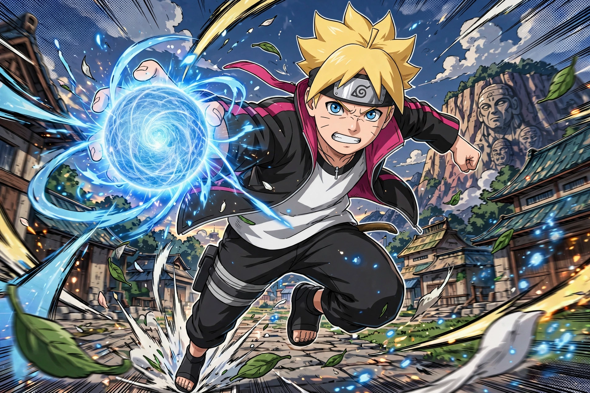

Boruto is a Japanese manga and anime series, a spin-off and sequel to Masashi Kishimoto's Naruto, centred on Boruto Uzumaki, son of Naruto Uzumaki, the Seventh Hokage.
| Boruto | |
|---|---|
 | |
| Manga | Boruto: Naruto Next Generations (2016–2023); Boruto: Two Blue Vortex (2023–) |
| Anime | 2017–2023, Studio Pierrot |
| Authors | Ukyō Kodachi / Masashi Kishimoto, Mikio Ikemoto (art) |
Boruto resents his father's absence, trains under Sasuke Uchiha, and with Sarada Uchiha and Mitsuki forms the new Team 7 under Konohamaru. The story introduces the Kāma seal, Kawaki, and the Ōtsutsuki threat, moving in Two Blue Vortex to a time-skipped, darker arc after a reality-altering event swaps Boruto and Kawaki's places in public memory.